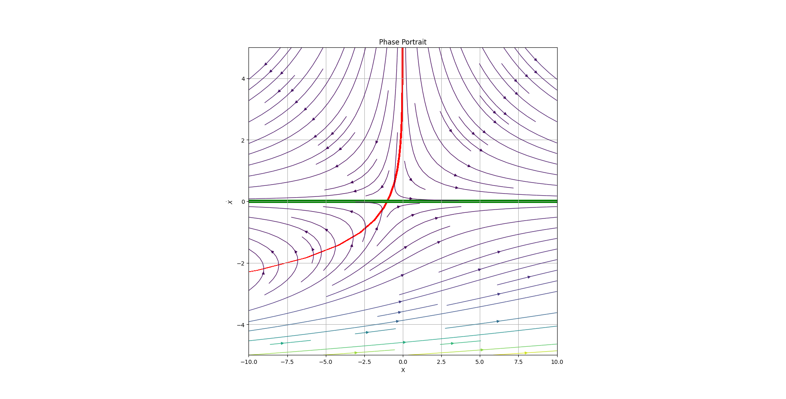

Nullcline2D
class phaseportrait.Nullcline2D(portrait, function, *, precision=0.01, xprecision=None, yprecision=None, offset=0, density=50, xRange=None, yRange=None, dF_args=None, xcolor='r', ycolor='b', bgcolor='w', alpha=0)
Class dedicated to 2 dimensions phase portraits. Useful where it is necessary to plot nullclines in a plot.
Integrated via method add_nullclines in PhasePortrait2D.
Parameters
-
portrait :
The class that uses Nullcline2D
-
function : callable
A
dFtype funcion. -
precision : float, optional
The minimum diference from
offsetto be considerated a nullcline, by default 0.01 -
xprecision : float, optional
For a different precision value only in the x axis, by default
precision -
yprecision : float, optional
For a different precision value only in the y axis, by default
precision -
offset : float, optional
If you want, for instance, a twoclide, by default 0
-
density : int, optional
Number of inner divisions on the x axis and y axis, by default 50
-
xRange : Union[float,list], optional
The range in which the nullclines are calculated, by default
portrait.Range[0] -
yRange : Union[float,list], optional
The range in which the nullclines are calculated, by default
portrait.Range[1] -
dF_args : dict, optional
If necesary, must contain the kargs for the
dFfuncion, by default None -
xcolor : str, optional
X nullcline color, by default 'r'
-
ycolor : str, optional
Y nullcline color, by default 'b'
-
bgcolor : str, optional
Background color, by default 'w'
-
alpha : int, optional
Opacity of the background, by default 0
Methods
Nullcline2D.plot
Nullcline2D.plot(*, axis=None)
Plots the nullclines in the given axis
Parameters
-
axis : matplotlib.Axis, optional
The axis in which the nullclines will be represented, by default
portrait.ax
Returns
- [matplotlib.contour.QuadContourSet,matplotlib.contour.QuadContourSet] X and Y contours.
Examples
from phaseportrait import PhasePortrait2D
def dF(x,y):
return x + np.exp(-y), -y
example = PhasePortrait2D(dF, [[-10,10], [-5, 5]])
example.add_nullclines(precision=0.05)
example.plot()
